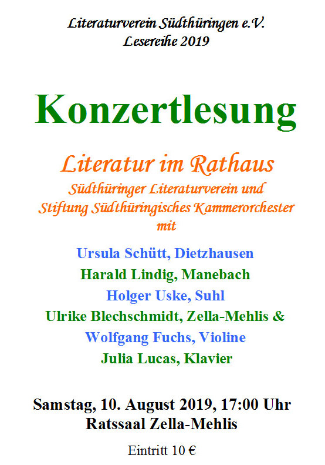

Zella-Mehlis. Zu einer Veranstaltungspremiere wird für Samstag, den 10. August 2019, 17:00 Uhr in den Ratssaal des Zella-Mehliser Rathauses eingeladen. Dann nämlich treten zum ersten Mal Autorinnen und Autoren des Südthüringer Literaturvereins gemeinsam mit Musikerinnen und Musikern des Südthüringischen Kammerorchesters auf. Mit einer Konzertlesung wollen sie das Interesse an hochklassigen Veranstaltungsangeboten aus der Region in der Region stärken und dem Publikum zugleich einen Eindruck vom aktuellen Stand beider Genres in Südthüringen vermitteln.
Zu hören und zu erleben sein werden Harald Lindig aus Manebach, Ursula Schütt aus Dietzhausen, Vereinsvorsitzender Holger Uske aus Suhl und Ulrike Blechschmidt aus Zella-Mehlis. Sie alle bringen neue und auf zahlreichen Auftritten bereits bejubelte eigene Texte zu Gehör. Durch den Vorstandsvorsitzenden der Stiftung Südthüringisches Kammerorchester Wolfgang Fuchs an der Violine und die Musikerin Julia Lucas am Klavier werden diese musikalisch bereichert. Bei einem Erfolg dieser Premiere ist schon jetzt eine Fortsetzung ins Auge gefasst.
Der Eintritt für diese Mittsommer-Konzertlesung beträgt 10 €. Sie wird im Rahmen der „Lesereihe 2019" des Südthüringer Literaturvereins gefördert durch die Thüringer Kulturstiftung.
